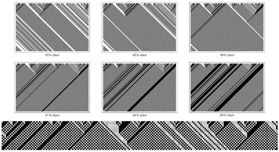
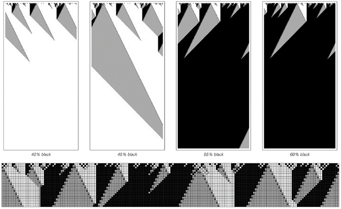
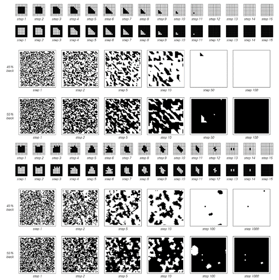
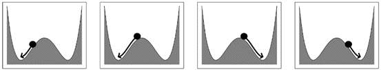

7.7 离散性的起源
在上一节中，我们看到，尽管一个系统在小尺度上可能由离散组件组成，但系统整体仍然可能表现出看似平滑且连续的行为。而且，正如我们之前所讨论的，绝大多数传统数学模型实际上都是基于这种连续性。
但是，当人们观察自然界中的实际系统时，结果往往发现离散行为——例如，斑马的皮毛具有离散的黑白条纹，而不是连续的灰色阴影。事实上，许多表现出复杂行为的系统至少在某种程度上具有整体离散性。
那么，这对连续模型意味着什么呢？在上一节中，我们发现离散模型可以产生连续行为。而在本节中，我们将发现相反的情况也是真实的：连续模型有时可以产生看似离散的行为。
不言而喻，如果想研究基于离散性的现象，那么通常从根本上是离散的模型开始更有意义。但是，在接触现有的科学模型和结果时，了解离散行为如何从连续过程中产生是很有用的。
水的沸腾提供了一个经典例子。如果你取一些水并持续提高其温度，那么在一段时间内几乎不会发生什么。但当温度达到100°C时，就会发生一个离散的转变，所有的水都会蒸发成蒸汽。
事实证明，有许多种系统，其中的连续变化可以导致这种离散的转变。
下一页顶部的图片展示了一个基于一维元胞自动机的简单例子。这个想法是在黑色元胞的初始密度上进行连续变化，然后观察这些变化对系统整体行为的影响。
人们可能会认为，如果所做的变化始终是连续的，那么效果也会相应地连续。但下一页的图片表明事实并非如此。
(p 337)
当黑色元胞的初始密度低于50%时，只有白色条纹会存在。但是，一旦初始密度增加到50%以上，就会发生一个离散的转变，这时存活下来的是黑色条纹，而不是白色条纹。
对面页的图片展示了同一基本现象的另一个例子。当黑色元胞的初始密度低于50%时，所有的黑色区域最终都会消失，系统完全变成白色。但是，一旦密度增加到50%以上，行为就会突然改变，系统最终会完全变成黑色。
事实证明，这种离散转变在一维元胞自动机中相当罕见，但在二维及更高维度中却越来越常见。下一页的图片展示了两个例子——第二个例子对应于我们在上一节末尾不同上下文中看到的一条规则。

一个一维元胞自动机，在其初始条件的属性连续变化时会表现出离散的行为变化。如果黑色元胞的初始密度低于50%，则最终只有白色条纹存活下来。但是，一旦密度增加到50%以上，白色条纹就会消失，黑色条纹占据主导地位。所展示的元胞自动机的基本规则是，如果元胞是黑色的，则采用其右侧邻居的颜色；如果元胞是白色的，则采用其左侧邻居的颜色。（这对应于第53页所述方案中的规则184。）
(p 338)
在这两个例子中，基本上发生的情况是，在黑色多于白色的区域中，黑色元胞的比例越来越大，而在白色多于黑色的区域中，则发生相反的情况。只要这些区域的边界不会陷入停滞（这在许多一维元胞自动机中都会发生），结果就是，无论哪种颜色最初更常见，最终都会占据整个系统。

这是一个一维元胞自动机，当黑色元胞的初始密度连续增加时，经过大量步骤后获得的黑色元胞的密度会发生离散变化。当初始密度低于50%时，黑色区域最终总会消失。但是，一旦密度增加到50%以上，黑色区域就会逐渐扩展，最终占据整个系统。该元胞自动机的基本规则允许每个元胞有四种可能的颜色。规则的设置是这样的：每当白色区域的左侧出现黑色区域时，两者之间的区域就会扩展成灰色。关键点是，如果白色区域比黑色区域窄，那么灰色会在到达黑色边缘之前先到达白色边缘。当这种情况发生时，黑色区域会扩展，而灰色区域会逐渐消失。
(p 339)

以下是两个二维元胞自动机的例子，当黑色元胞的初始密度连续变化时，它们会表现出离散的行为转变。在上面的顶部规则中，一个特定元胞的新颜色简单地通过观察该元胞以及其上方和右侧的紧邻邻居来确定。如果这三个元胞中有两个或两个以上是黑色的，则新颜色为黑色；否则为白色。上面中间的图片显示，根据这条规则，相反颜色的块会逐渐被破坏，因此无论哪种颜色最初更常见，最终都会完全占据主导地位。上面的底部规则与第336页所示的规则完全相同。同样地，无论哪种颜色最初更常见，最终都会占据主导地位，尽管根据这条规则，这需要更长的时间才能发生。
(p 340)
在大多数元胞自动机中，经过长时间后得到的行为要么与初始密度基本无关，要么随其变化相当平滑。但是，对面页面上展示的元胞自动机的特殊之处在于它们有两个截然不同的稳定状态——要么全是白色，要么全是黑色——当改变初始密度时，这两个状态之间会发生离散转变。
人们可能会认为，这种离散转变的存在必然与底层元胞自动机规则的离散性质有关。但事实证明，在具有连续底层规则的系统中也可能发生这种转变。
下面的图片展示了一个非常标准且简单的例子，说明这种情况是如何发生的。如果从中心驼峰左侧开始，那么球将始终滚入左侧的最小值点。但是，如果逐渐改变球的初始位置，那么当越过中心时，就会发生离散转变，球会滚入右侧的最小值点。
因此，尽管控制球运动的数学方程具有简单的连续形式，但它们产生的行为仍然涉及离散转变。虽然这个特定的例子可能看起来是人为设计的，但事实证明，在许多其他情况下也会出现基本上相同的数学方程——例如，在各种化学反应中化学浓度的变化。
每当出现这样的方程时，它们都会不可避免地导致系统具有有限数量的稳定状态，当系统参数发生变化时，这些状态之间会发生离散转变。

这是一个连续系统的标准简单例子，其中由于初始条件的连续变化，行为发生了离散变化。当球从中心线的左侧任何位置开始时，它会滚入左侧的最小值点。但是，如果它从右侧开始，那么它会滚入右侧的最小值点。自然界中有许多系统遵循与描述球体能量和运动的数学方程相同的一般形式。
(p 341)
因此，即使一个系统在某些层面上遵循连续规则，它仍然可能表现出离散的总体行为。事实上，这种行为成为系统最明显的特征之一是相当常见的——这就是为什么像元胞自动机这样的离散系统最终往往成为最合适的模型。